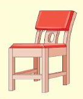
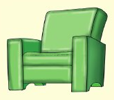
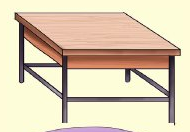
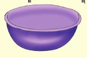
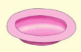

1. Taja majina ya wanyama uliowaona na uliowabaini katika picha
hiyo.
2. Andika jina la mnyama mkubwa kuliko wote.
Andika jibu kwa mkono katika sehemu hii.
3. Andika herufi ya mwanzo ya kila mnyama
unayemwona.
Andika jibu kwa mkono katika sehemu hii.
Picha za vifaa vya nyumbani
Vifaa vya nyumbani ni: kiti, kochi, meza, bakuli, sahani na kijiko.





1. Andika majina ya vitu ulivyoviona na ulivyobaini.
Andika jibu kwa mkono katika sehemu hii.
2. Andika herufi za mwanzo za vitu ulivyoviona na ulivyobaini.
Mfano wa kuangalia
Andika jibu kwa mkono katika sehemu hii.
3. Andika mistari miwili ya herufi m na k .
Andika jibu kwa mkono katika sehemu hii.
Zoezi la kumi na moja
1. Andika herufi za mwanzo za majina ya vyakula
unavyovipenda.
Andika jibu kwa mkono katika sehemu hii.
2. Andika herufi za mwanzo za majina ya rangi
unazozijua.
Andika jibu kwa mkono katika sehemu hii.